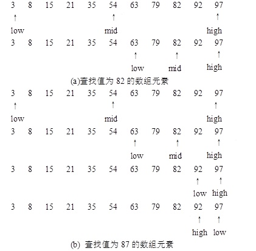
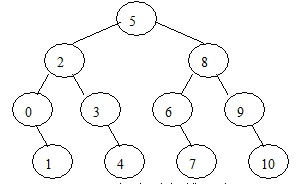

问题描述
顺序查找是一种最简单和最基本的检索方法。其基本思想是：从检索表的一端（如表中第一个记录或最后一个记录）开始，逐个进行记录的关键字和给定值的比较。若某个记录的关键字和给定值比较相等，则查找成功；否则，若直至检索表的另一端（如最后一个记录或第一个记录），其关键字和给定值比较都不等，则表明表中没有待查记录，查找不成功。
顺序查找可以写成一个简单的一重循环，循环中依次将检索表（不妨设为数组a）中的元素与给定值比较，若相等，用break退出循环。算法描述为：
for (i=0; i< n;i++)
if (a[i]==x) break;
这样，循环结束后，若循环控制变量i小于数组元素个数n，则查找成功；否则，查找失败。
顺序查找实现简单，但效率不高。当待查找序列有序时，即各检索表中元素的次序是按其记录的关键字值的大小顺序存储的。此时采用折半查找会大幅提高查找效率。
折半查找的基本思想是先确定待查数据的范围（区间），然后逐步缩小范围直到找到或找不到该记录为止。具体做法是：先取数组中间位置的数据元素与给定值比较。若相等，则查找成功；否则，若给定值比该数据元素的值小（或大），则给定值必在数组的前半部分（或后半部分），然后在新的查找范围内进行同样的查找。如此反复进行，直到找到数组元素值与给定值相等的元素或确定数组中没有待查找的数据为止。因此，折半查找每查找一次，或成功，或使查找数组中元素的个数减少一半，当查找数组中不再有数据元素时，查找失败。
输入一个整数，在给定的有序数组中查找该整数是否存在，若存在，给出其数组的下标；若不存在，输出查找不成功信息。
输入格式
第一行是一个正整数N (1 ≤ N ≤ 100000)，代表数组中元素的个数。
第二行有N个整数，这N个整数从小到大排列好了。
第三行是一个整数M，代表待查找元素的个数。
接下来的M行，每行有一个整数x，表示每个待查找的元素。
输出格式
输出有M行，每行一个整数。若待查找元素x在数组中存在，输出其数组元素的下标；若不存在，输出-1。
输入样例
20
1 6 9 14 15 17 18 23 24 28 34 39 48 56 67 72 89 92 98 100
3
1
25
72
输出样例
0
-1
15
设有一数组a[n]，数组中的元素按值从小到大排列有序。用变量low、high和mid分别指示待查元素所在区间的下界、上界和中间位置。初始时，low=0，high=n-1。
1）令 mid = (low+ high) /2 。
2）比较给定值x与a[mid]值的大小
若a[mid] == x ，则查找成功，结束查找；
若a[mid]> x ，则表明给定值x只可能在区间low ~ mid-1内，修改检索范围。令high=mid-1，low值保持不变；
若a[mid]< x ，则表明给定值x只可能在区间mid+1~high内，修改检索范围。令low=mid+1，high值保持不变。
3）比较当前变量low和high的值，若low≤high，重复执行第1）、2）两步，若low>high，表明数组中不存在待查找的元素，查找失败。
例如，设一有序的数组中有11个数据元素，它们的值依次为{3，8，15，21，35，54，63，79，82，92，97}，用折半查找在该数组中查找值为82和87的元素的过程如图1所示。

图1 折半查找的查找过程
图1（a）所示为查找成功的情况，仅需比较2次。若用顺序查找，则需比较9次。图1（b）所示为查找不成功的情况，此时因为low>high，说明数组中没有元素值等于87的元素。得到查找失败信息，也只需比较4次。若用顺序查找，则必须比较12次。
折半查找过程通常可用一个二叉判定树表示。对于上例给定长度的数组，折半查找过程可用图2所示的二叉判定树来描述，树中结点的值为相应元素在数组中的位置。查找成功时恰好走了一条从根结点到该元素相应结点的路径，所用的比较次数是该路径长度加1或结点在二叉判定树上的层次数。所以，折半查找在查找成功时所用的比较次数最多不超过相应的二叉判定树的深度[log2n]+ 1。同理，查找不成功时，恰好走了一条从根结点到某一终端结点的路径。因此，所用的比较次数最多也不超过[log2n] + 1。

图2 描述折半查找过程的二叉判定树
#include <stdio.h>
#define N 100001
int main()
{
int a[N],n;
scanf("%d",&n);
for (int i=0;i<n;i++)
scanf("%d",&a[i]);
int m;
scanf("%d",&m);
while (m--)
{
int x;
scanf("%d",&x);
int low =0, high =n-1,mid; // 置区间初值
while (low<=high)
{
mid = (low+high)/2 ;
if (x == a[mid]) break; // 找到待查记录
else if (x<a[mid]) high=mid-1; // 继续在前半区间进行检索
else low=mid+1; // 继续在后半区间进行检索
}
if (low<=high) // 找到待查记录
printf("%d\n",mid);
else
printf("-1\n");
}
return 0;
}
本题选自杭州电子科技大学OJ题库（http://acm.hdu.edu.cn/showproblem.php?pid=2141）
Problem Description
Give you three sequences of numbers A, B, C, then we give you a number X. Now you need to calculate if you can find the three numbers Ai, Bj, Ck, which satisfy the formula Ai+Bj+Ck = X.
Input
There are many cases. Every data case is described as followed: In the first line there are three integers L, N, M, in the second line there are L integers represent the sequence A, in the third line there are N integers represent the sequences B, in the forth line there are M integers represent the sequence C. In the fifth line there is an integer S represents there are S integers X to be calculated. 1<=L, N, M<=500, 1<=S<=1000. all the integers are 32-integers.
Output
For each case, firstly you have to print the case number as the form "Case d:", then for the S queries, you calculate if the formula can be satisfied or not. If satisfied, you print "YES", otherwise print "NO".
Sample Input
3 3 3
1 2 3
1 2 3
1 2 3
3
1
4
10
Sample Output
Case 1:
NO
YES
NO
（1）编程思路。
本题的题意是：有A、B、C三个数组，每个数组中有若干个整数元素，要求判断对于输入的整数x，是否可以在A、B、C三个数组中各取一个元素，使得三个元素之和等于x，若可以取得，输出“YES”，否则输出“NO”。
预先求出数组A和B中任意各取一个数相加所得到的和值，存储到q数组中，然后对q数组进行排序，排序后去掉数组q中重复的和值。
对于输入的X，枚举数组C中的每个元素C[i]，然后在q数组中采用折半查找是否存在X-C[i]，若存在，则输出“YES”，否则输出“NO”。
（2）源程序。
#include <stdio.h>
#include<algorithm>
using namespace std;
#define N 501
int binsearch(int a[],int n,int key);
int main()
{
int a[N],b[N],c[N];
int q[N*N];
int cnt=0,l,m,n;
while(scanf("%d%d%d",&l,&m,&n)!=EOF)
{
int i,j,k;
for (i=0;i<l;i++) scanf("%d",&a[i]);
for (i=0;i<m;i++) scanf("%d",&b[i]);
for (i=0;i<n;i++) scanf("%d",&c[i]);
k=0;
for (i=0;i<l;i++)
for (j=0;j<m;j++)
q[k++]=a[i]+b[j];
sort(q,q+k);
for (i=j=1;i<k;i++)
if (q[i]!=q[j]) q[j++]=q[i]; // 去重
k=j;
printf("Case %d:\n",++cnt);
int s,x;
scanf("%d",&s);
for(i=1;i<=s;i++)
{
scanf("%d",&x);
for(j=0;j<n;j++)
if (binsearch(q,k,x-c[j])!=-1) break;
printf("%s\n",(j<n)?"YES":"NO");
}
}
return 0;
}
int binsearch(int a[],int n,int key)
{
int low =0,high =n-1;
while (low<=high)
{
int mid = (low+high)/2 ;
if (key==a[mid]) return mid; // 找到待查记录
else if (key<a[mid]) high=mid-1; // 继续在前半区间进行检索
else low=mid+1; // 继续在后半区间进行检索
}
return -1; // 找不到待查记录
}
本题选自洛谷题库 （https://www.luogu.org/problem/P2440）
题目描述
木材厂有一些原木，现在想把这些木头切割成一些长度相同的小段木头（木头有可能有剩余），需要得到的小段的数目是给定的。当然，我们希望得到的小段木头越长越好，你的任务是计算能够得到的小段木头的最大长度。木头长度的单位是cm。原木的长度都是正整数，我们要求切割得到的小段木头的长度也是正整数。
例如有两根原木长度分别为11和21，要求切割成到等长的6段，很明显能切割出来的小段木头长度最长为5.
输入格式
第一行是两个正整数N和K(1 ≤ N ≤ 100000，1 ≤ K ≤ 100000000)，N是原木的数目，K是需要得到的小段的数目。
接下来的N行，每行有一个1到100000000之间的正整数，表示一根原木的长度。
输出格式
能够切割得到的小段的最大长度。如果连1cm长的小段都切不出来，输出”0”。
输入样例
3 7
232
124
456
输出样例
114
（1）编程思路。
这个问题可以采用类似于折半查找的方法进行解决。
设left是切割的小段木头的最短长度，right是最大长度，初始时，left为1，right为最长的原木长度。
每次取left和right的中间值mid（mid = (left + right) / 2）进行尝试，测试采用当前长度mid进行加工，能否切割出需要的段数K，测试算法描述为：
num = 0;
for (i = 0; i < n; i++)
{
if (num >= k) break;
num = num + len[i] / mid ;
}
如果当前mid值可以加工出所需段数（即num >= k），就增大mid值继续试（通过让left = mid的方法来增大mid），不符合要求就减小mid值继续试（通过让right = mid的方法来减小mid）。直到left + 1 >= right结束尝试，所得的left值就是可以加工出的小段木头的最大长度。
（2）源程序。
#include <stdio.h>
int main()
{
int n, k, len[100001], i, left, right, mid,num;
scanf("%d%d",&n,&k);
right = 0;
int sum=0;
for (i = 0; i < n; i++)
{
scanf("%d",&len[i]);
sum+=len[i];
if (right < len[i]) right = len[i];
}
if (sum<k)
{
printf("0\n");
return 0;
}
left =1 ;
while ( left + 1 < right)
{
mid = (left + right) / 2;
num = 0;
for (i = 0; i < n; i++)
{
if (num >= k) break;
num = num + len[i] / mid ;
}
if ( num >= k )
left = mid;
else
right = mid;
}
printf("%d\n",left);
return 0;
}
题目描述
使得 xx 达到或超过 n 位数字的最小正整数 x 是多少？
输入格式
一个正整数 n（n<=2000000000）。
输出格式
使得 xx达到 n 位数字的最小正整数 x。
输入样例
11
输出样例
10
（1）编程思路。
正整数m的位数为[log10(m)]+1 ([ ]表示向下取整）。
本题求x^x的位数，也就是求[log10(x^x)]+1，利用对数的运算法则，log10(x^x)=x* log10(x)。由于对数函数满足单调递增，因此可采用二分的思想求x* log10(x)≥n-1的最小值。
初始时，设left为1，right为最大整数2e9。
每次取left和right的中间值mid（mid = (left + right) / 2）进行尝试，看当前数mid^mid的位数是否达到或超过n。
如果当前mid^mid的位数小于n（即mid*log10(mid)<n），说明mid小了，就增大mid值继续试（通过让left = mid+1的方法来增大mid），若当前mid^mid的位数不小于n（即mid*log10(mid)>=n），说明mid值符合要求，但为了找到其最小值，就减小mid值继续试（通过让right = mid的方法来减小mid）。直到left >= right结束尝试，所得的left值就是可以使得 xx 达到或超过 n 位数字的最小正整数 x。
（2）源程序。
#include <stdio.h>
#include <math.h>
int main()
{
int n;
scanf("%d",&n);
n--;
int left=1,right=2e9;
while (left<right)
{
int mid=(left+right)/2;
if (mid*log10(mid)<n) left=mid+1;
else right=mid;
}
printf("%d\n",left);
return 0;
}